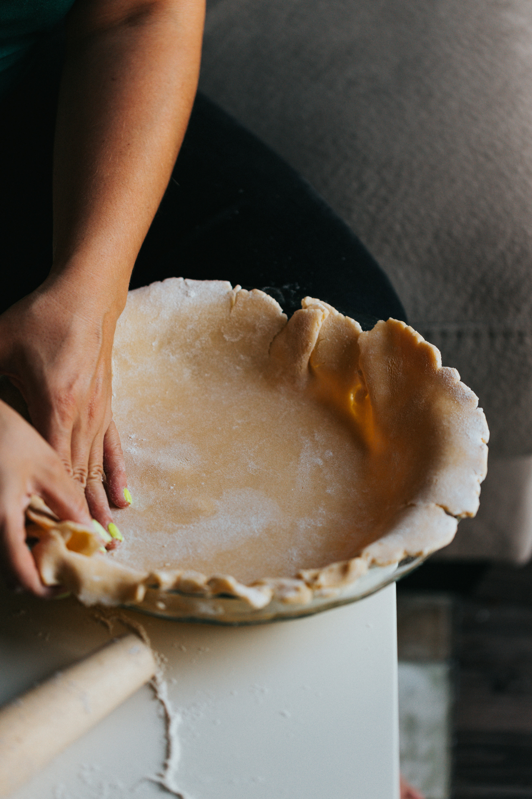

King Arthur Gluten-Free Pie Crust

About This Recipe
Every year for Friendsgiving I make a pumpkin pie for dessert. My best friend
has a gluten intolerance so I have the added challenge of making
the entire thing gluten-free. This recipe by King Arthur is hands down
the best gluten-free pie crust I've made throughout the years, and will
continue to make for future Friendsgivings.
This gluten-free pie crust has a flaky texture that can be difficult
to achieve without conventional wheat. Be sure to bake it thoroughly:
The golden-brown color gives it a wonderful toasty flavor! This recipe
makes enough for a single 9" gluten-free crust.
Ingredients
- 195g King Arthur Gluten-Free All Purpose Flour
- 1 tablespoon granulated sugar
- 1/2 teaspoon xanthum gum
- 1/2 teaspoon table salt
- 85g butter, cold
- 1 large egg
- 2 teaspoons lemon juice or vinegar
Instructions
- Whisk together flour, sugar, xanthum gum, and salt.
- Cut the cold butter into pats, then work the pats into the
flour mixture until it's crumbly, with some larger, pea-sized
chunks of butter remaining.
- Whisk the egg and lemon juice or vinegar until very foamy.
Mix into the dry ingredients. Stir until the mixture holds together,
adding 1 to 3 additional tablespoons cold water if necessary.
- Shape into a ball and chill in the refrigerator for a hour or up to
24 hours. Allow the dough to rest at room temperature for 10 to 15
minutes before use.
Home
Photo by Nathan Dumlao on
Unsplash